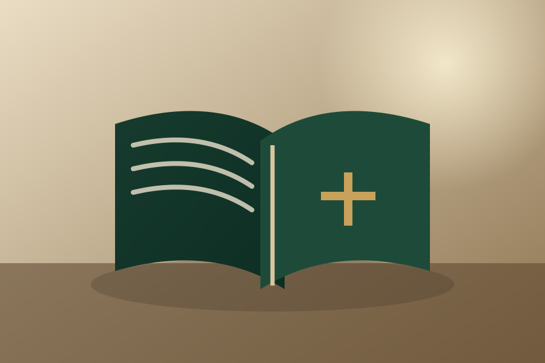

Caminho
Valorizamos o itinerário de cada pessoa, com passos reais, direção e sentido cristão.
Caminho • Encontro • Serviço
Ideias transformadas em caminhos de organização, formação, espiritualidade e missão.
Sobre nossa proposta
Via Santa Cruz é uma casa de projetos que une caminho, serviço, formação e espiritualidade. Reúne iniciativas diferentes, mas ligadas pelo mesmo propósito: colocar ideias, cuidado e criatividade a serviço da Igreja e das pessoas.
Valorizamos o itinerário de cada pessoa, com passos reais, direção e sentido cristão.
Colocamos ideias e talentos a serviço da Igreja e das pessoas, com clareza e responsabilidade.
Cultivamos uma espiritualidade encarnada, que ilumina a vida concreta e sustenta a missão.
Nossos projetos
Duas iniciativas distintas, unidas por uma mesma vocação de serviço: organizar melhor a vida e cultivar com profundidade a interioridade.
Uma ferramenta para organizar e consultar informações da vida eclesial com clareza, unidade e praticidade.

Um espaço pessoal de silêncio, escrita e encontro com Deus, pensado para acompanhar a vida interior com simplicidade.
Via Santa Cruz
A Via Santa Cruz reúne projetos diferentes, mas nascidos de uma mesma convicção: servir com beleza, clareza, acolhimento e sentido cristão. Organização, formação e espiritualidade encontram aqui uma casa comum.